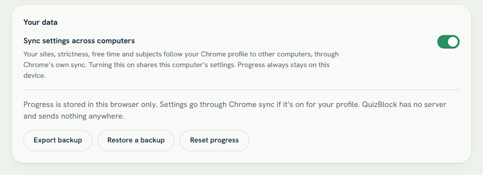

On this page
QuizBlock has no account and no server: everything lives in your browser. This guide covers syncing settings between computers, backing up and restoring, resetting your progress, and what uninstalling deletes.
What’s stored where
| What | Where |
|---|---|
| Settings: your sites, strictness, free minutes, quiz subjects, level, daily limits, focus hours, pause between sessions and Rather do list | This browser, and Chrome sync if settings sync is on |
| Progress: what you’ve learned and when it’s due, your streak, daily totals and recent challenges | This browser only |
| Decks you import | This browser only |
| Theme and language | This computer only |
Daily totals are kept for 60 days. The privacy policy has the full list.
Sync settings across computers
The switch is in Settings → Your data → Sync settings across computers. When it’s on, and Chrome sync is on for your profile, Chrome copies your settings to the other computers signed in to the same Chrome profile. QuizBlock never receives them. Progress always stays on each computer.

To set up a second computer:
- Install QuizBlock on the other computer, in the same Chrome profile.
- Use your settings. The welcome page says Welcome back. and lists the sites and settings it found. Click Allow access and use these.
- Allow access. Chrome asks for permission on each computer, so click Allow.
Your map starts blank there, because progress doesn’t sync. To keep that computer separate, choose Set up this computer separately instead: it turns settings sync off on that computer only.
If a computer already has its own sites and you turn sync on later, it brings in the other computer’s settings and keeps its own sites too. Anything looser than what’s set there starts tomorrow. After that, changes reach your other computers once they take effect, so making something easier still waits a day.
Turning sync off leaves this computer’s settings as they are, and your other computers keep theirs. A very long list of sites may not fit in Chrome sync; if that happens, Your data says so, and your settings stay safe on that computer.
Export a backup
- Open Your data. Go to Settings → Your data.
- Click Export backup. Your browser saves a file named like
quizblock-backup-2026-11-25.json.
The file holds your settings, your progress and any decks you imported. It stays on your computer unless you move it. Export one before moving to a new computer, reinstalling or resetting.
Restore a backup
- Choose the file. In Your data, click Restore a backup and pick a file saved with Export backup.
- Read the summary. Before anything changes, QuizBlock lists what the backup brings back, which sites it adds or makes stricter, and anything that waits until tomorrow.
- Confirm. Click Restore, or Cancel to leave things as they are.
Restoring merges the backup with what’s here, and it only ever tightens:
- Learning from both sides is kept, so nothing learned on this computer is lost.
- Sites in the backup are added, or made stricter here if the backup has them switched on or blocked. Sites already covered by a broader one on your list are left out.
- Strictness, free minutes, level and daily limits follow the usual rule: stricter applies now, more relaxed waits until tomorrow (see change your rules).
- Your quiz subjects are taken from the backup, and decks you don’t have here are added.
- Today’s minutes, free minutes already given and this week’s emergency passes stay as they are.
Reset progress
To start your learning over, go to Settings → Your data, click Reset progress, then Yes, erase my progress (or Keep it to back out). This erases what you’ve learned and when it’s due, your streak, your daily totals and your recent challenges, so your map starts blank. Your settings, sites and decks stay.
Today’s minutes on each site, free minutes already given and this week’s passes also stay, so a reset doesn’t lift today’s limits.
There’s no undo. If you might want your progress back, export a backup first: restoring it brings your learning back.
What uninstalling deletes
Uninstalling QuizBlock deletes everything it stored in that browser: your settings, your progress and your decks. There’s no account or server, so there’s no other copy, with one exception: if settings sync was on, a copy of your settings may stay in your Chrome sync data. Installing QuizBlock again in the same Chrome profile can bring them back, and Chrome’s own sync controls can remove them.
To keep your progress, export a backup before you uninstall.